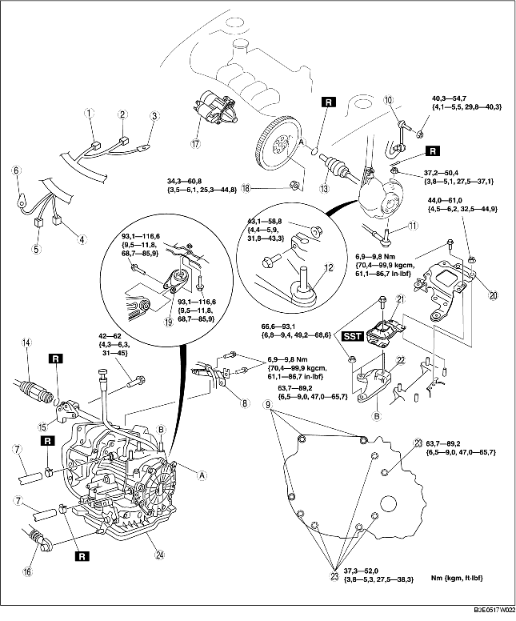

1. Verwijder de accukap. (Zie VERWIJDEREN/PLAATSEN ACCU [ZJ, Z6].)
2. Neem de minkabel van de accu los.
3. Verwijder de accu, de accukap en de accuhouder. (Zie VERWIJDEREN/PLAATSEN ACCU [ZJ, Z6].)
4. Verwijder het desbetreffende deel van het luchtfilter. (Zie VERWIJDEREN/PLAATSEN LUCHTINLAATSYSTEEM [ZJ, Z6].)
5. Verwijder de EGR-leiding.
6. Verwijder de voorwielen en de beschermplaten.
7. Verwijder het onderpaneel.
8. Tap de ATF af. (Zie VERVERSEN AUTOMATISCHE-TRANSMISSIEVLOEISTOF.)
9. Verwijder de onderdelen in de aangegeven volgorde, zie de tabel.
10. Plaats de onderdelen in omgekeerde volgorde.
11. Vul ATF bij tot het aangegeven niveau. (Zie VERVERSEN AUTOMATISCHE-TRANSMISSIEVLOEISTOF.)
12. Voer de test van het mechanisch systeem uit. (Zie TESTEN MECHANISCH SYSTEEM.)

.
1. Houd de meeneemplaat tegen met een sleufkopschroevendraaier.
2. Verwijder de moeren van de koppelomvormer via de inbouwopening van de startmotor.
1. Verwijder het stuurbekrachtigingsreservoir en het koelvloeistofreservoir, maar neem de slangen niet los.
2. Gebruik de bouten met onderdeelnummer 99794 1025 of M10× 1,25, lengte 25 mm {0,98 in} om SST in de afgebeelde positie te bevestigen.
3. Plaats een plankje met de juiste afmetingen tussen het voorscherm en de versteviging van het binnenscherm voor.
4. Ondersteun de motor met SST.
5. Verwijder de accuhouder, het motorrubber nr. 4 en de motorsteun.
1. Laat de motor naar de transmissie toe overhellen door het deel dat met A is aangegeven los te draaien.
2. Ondersteun de transmissie met een krik.
3. Verwijder de bevestigingsbouten van de transmissie.
4. Verwijder de transmissie.
1. Zet de transmissie op een krik en breng de transmissie omhoog.
2. Plaats de bevestigingsbouten van de transmissie.
1. Plaats motorsteun nr. 4 op het transmissiehuis en draai de moeren vast.
2. Plaats motorrubber nr. 1 op het subframe en draai de bouten tijdelijk vast.
3. Plaats motorrubber nr. 4 met de tapeinden door de gaten en draai de bout vast die in de afbeelding is aangegeven.
4. Plaats de accuhouder op motorrubber nr. 4 met de tapeinden door de gaten en draai de moeren vast die in de afbeelding zijn aangegeven.
5. Draai de bouten definitief vast.
6. Verwijder het SST.
1. Houd de meeneemplaat tegen met een sleufkopschroevendraaier.
2. Houd de krukaspoelie tegen om te voorkomen dat de meeneemplaat gaat draaien.
3. Draai de bevestigingsmoeren van de koppelomvormer vast.